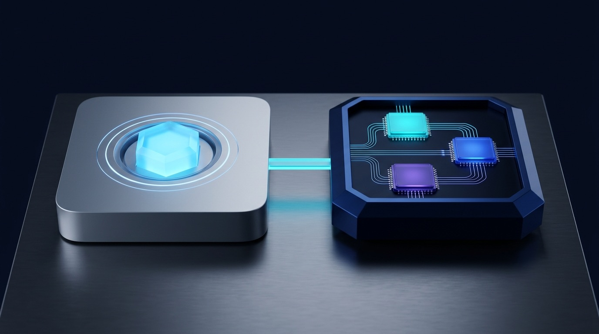
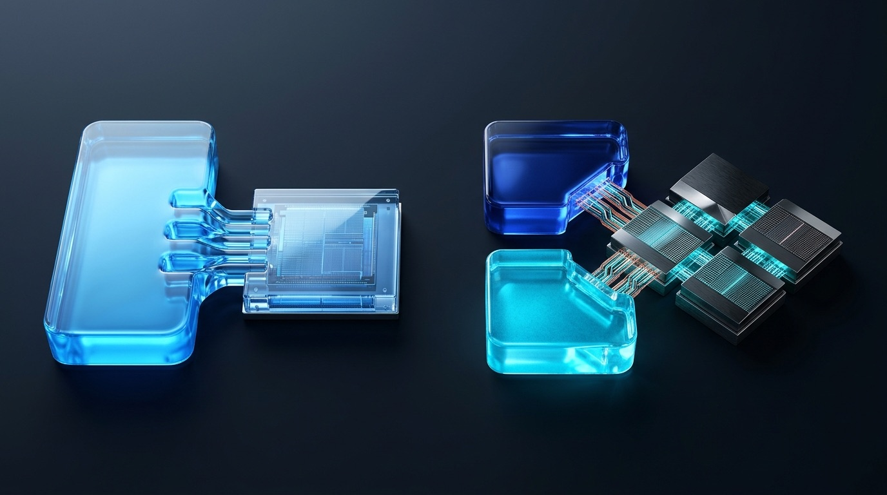

Master both sides of modern desktop AI—comparing Apple Silicon unified memory, Apple Intelligence, Shortcuts, and Raycast against Windows 11 Copilot+ PCs, Click to Do, opt-in Recall, PowerToys Command Palette, MLX, DirectML/ONNX NPUs, and WSL2 CUDA passthrough.

MLX, or offload background AI onto 45–80 TOPS Windows NPUs and WSL2 CUDA GPUs.macOS and Windows 11 solve on-device intelligence from opposite hardware directions. Apple pools CPU, GPU, and Neural Engine access into one high-bandwidth unified memory slab, while Microsoft orchestrates specialized execution providers across dedicated 40+ TOPS NPUs, discrete GPUs, and Linux WSL2 containers.
Local token speed rarely bottlenecks on raw math cores; it bottlenecks on how fast weights stream out of memory. On Apple Silicon, one shared pool feeds Metal and mlx-lm without copying data across a PCIe slot. On Windows 11 Copilot+ hardware, Windows ML and ONNX Runtime dynamically route lightweight always-on models to an ultra-efficient NPU while heavier inference targets DirectML, TensorRT, or WSL2 CUDA.
mlx_lm when you want large local LLMs (14B–70B) running silently on a laptop. Use Windows Copilot+ NPUs for low-wattage always-on desktop vision (Click to Do, Recall, local OCR) and lean on discrete NVIDIA CUDA inside WSL2 for heavy batch training or high-throughput local serving.
Before tuning launchers or local models, check what hardware tier you are standing on. Unified memory bandwidth determines large-model speed on macOS, while Copilot+ certification and discrete VRAM govern NPU and CUDA workloads on Windows 11.
System Settings → Apple Intelligence & Siri; verify matching system/Siri language and FileVault encryption.brew), Raycast (or Alfred Powerpack), and Python mlx-lm for zero-copy Metal inference.wsl --install with host-only NVIDIA Studio/Game Ready drivers for near-native CUDA inside Ubuntu.brew install --cask raycast && pip3 install -U mlx-lm |
Windows PowerShell: winget install --id Microsoft.PowerToys -e && winget install --id Microsoft.FoundryLocal -e && winget install --id 9PFXXSHC64H3 -e
| Machine Class | Memory Bandwidth | Accelerator Topology | Native OS AI Features | Best Power-User Role |
|---|---|---|---|---|
| MacBook Air / Pro M4 or M5 Base / Pro |
120–307 GB/s unified memory | Apple GPU + ~35–38 TOPS ANE via Metal & MLX | Writing Tools, Shortcuts Use Model, Private Cloud Compute | Silent battery-friendly daily coding, Raycast AI & 7B–14B MLX models. |
| Mac Studio / Max M4/M5 Max & Ultra |
546 GB/s to 1.2 TB/s unified | High-core Metal GPU sharing 64–512 GB RAM | Full Apple Intelligence + massive zero-copy local context | Running 32B–120B+ local reasoning models & LoRA fine-tuning offline. |
| Copilot+ Ultrabook Snapdragon X / Lunar Lake |
100–228 GB/s LPDDR5X | 45–80 TOPS dedicated NPU (QNN / OpenVINO EP) | Click to Do, Opt-in Recall, Phi Silica, Studio Effects | All-day office ops, screen OCR, instant PowerToys Paste with AI. |
| AMD Strix Halo PC Ryzen AI Max (256-bit) |
~256–273 GB/s quad-channel | 50 TOPS XDNA 2 NPU + large shared iGPU pool | Copilot+ NPU suite + Windows ML / DirectML / ROCm | Windows counterpart to Mac Pro-tier unified memory for big local LLMs. |
| Windows RTX Tower Desktop + WSL2 Ubuntu |
120 GB/s system + 500–1,000+ GB/s GDDR6X/7 | Discrete NVIDIA Tensor Cores + TensorRT EP / CUDA | PowerToys AI + Foundry Local + native WSL2 Linux CUDA | Heavy PyTorch training, vLLM multi-user serving, image/video diffusion. |
Although Apple and Microsoft build radically different system UIs, power users rely on seven parallel control points—mapping global launchers, clipboard transforms, on-screen vision overlays, and local model endpoints into one coherent daily rhythm.
Opt + Space 1
Quicklinks & Extensions
@claude Summarize clipboard diff as 3 risk bulletsgh-pr • Tool: @browser • Clipboard
_inbox/.
mlx_lm.server 3
Zero Swap
Win + Alt + Space 4
Alt+1..9 Quick Shelf
$ display • > wsl -d Ubuntu • = 24 * 1024Win + Shift + V 5
Paste with AI
Win + Q) • Recall Opt-In 6
Hello ESS
127.0.0.1:8080/v1 (mlx_lm.server ↔ Foundry / WSL2 CUDA)
brew bundle ↔ winget
Opt+Space command bar running multi-model Quick AI, Quicklinks, and React/TS Extensions on both platforms.
Brewfile app bundles paired with strict macOS Privacy & Security permissions and local MLX acceleration.
Win+Alt+Space) with $ settings jumps, WSL commands, and Alt+1..9 pinned shelf slots.
Win+Shift+V): Converts clipboard data to Plain Text, Markdown, JSON, local image OCR, or AI transforms via Foundry Local / Phi Silica.
Win+Q for instant on-screen NPU actions while keeping opt-in Recall protected behind BitLocker, ESS, and exclusions.
mlx_lm.server on macOS or Foundry Local / Ollama on Windows behind 127.0.0.1 so scripts, editor plugins, and Raycast AI work identically on every desk.
On Apple Silicon, native privacy meets effortless keyboard velocity. Combine system-wide Writing Tools and deterministic Shortcuts automations with Raycast Quicklinks, Alfred offline scripts, and reproducible Homebrew environments.
Apple’s ~3B on-device foundation model handles instant Writing Tools rewrites and summaries locally. Larger reasoning steps escalate automatically to Private Cloud Compute (PCC) nodes running Apple Silicon with cryptographic attestation and zero persistent storage.
In macOS Sequoia/Tahoe Shortcuts, pair deterministic triggers (Finder Quick Actions, folder watches, or shortcuts run) with the built-in Use Model block—explicitly choosing On-Device, Private Cloud Compute, or ChatGPT with zero API key overhead.
Use Raycast (Opt+Space) when you want model choice (Claude, GPT, Gemini, or local Ollama/MLX), dynamic AI Quicklinks with {selection} or {clipboard} tokens, and @tool mentions across GitHub, Linear, and your active browser tab.
Brewfile
Prefer zero-account local speed? Alfred remains unmatched for instant offline file filters and custom shell Script Filters. Anchor your CLI tools, casks, and fonts in a versioned Brewfile synced via brew bundle.
# ~/.Brewfile — Declarative macOS AI power-user setup (apply with: brew bundle --global)
cask "raycast" # Global launcher, AI Quicklinks, Extensions & Clipboard History
cask "orbstack" # Lightweight Linux containers on Apple Silicon
brew "mlx" # Apple Silicon array runtime; install LLM tools via: pip3 install mlx-lm
# Trigger a saved Apple Intelligence Shortcuts workflow directly from zsh or Raycast Script Command:
pbpaste | shortcuts run "Clean Clipboard to Markdown" | pbcopySwitching between a MacBook Pro and a Windows 11 Copilot+ desk feels effortless when your muscle memory stays identical. Standardize four core shortcut pairs, then compose every desktop AI action from the same five-part blueprint.
Opt + Space (Raycast) or Cmd + Space (Spotlight)Cmd + Shift + V (Raycast Clipboard / Paste Plain)Cmd + Shift + 5 → Shortcut / Raycast OCRbrew install & brew bundle dumpWin + Alt + Space (Command Palette) or Raycast v2.0Win + Shift + V (PowerToys Advanced Paste)Win + Q / Win + Click (Click to Do overlay)winget import -i winget.jsonOpt+Space / Win+Shift+V)
[2. Local Context] pulls selected text, clipboard, or screen OCR,
[3. Silicon Runtime] routes to MLX / PCC on Mac or NPU / Foundry on Win,
[4. Structured Transform] outputs clean JSON, Markdown, or diff summary,
[5. Privacy & Approval Gate] after checking app exclusions and human review before paste.
| Workflow Element | What It Controls | What Fails When Skipped |
|---|---|---|
| 1. Hotkey Trigger | Binds one memorable chord (launcher or paste menu) to fire without touching the mouse. | Opening a browser chat tab breaks deep focus and slows quick tasks by 5x. |
| 2. Local Context | Grabs exact clipboard text, active file path, or Click to Do screen selection automatically. | You waste time manually copying paragraphs or re-explaining which file you mean. |
| 3. Silicon Runtime | Matches task size to local NPU/MLX for speed and privacy, or frontier cloud for deep logic. | Sensitive logs leak to external APIs or tiny NPUs choke on 64K-token codebases. |
| 4. Structured Transform | Forces strict output shape (JSON schema, table, Conventional Commit, or bullet checklist). | Chatty prose spills into your terminal or Slack channel, forcing manual cleanup. |
| 5. Privacy Gate | Enforces password-manager exclusions, PII scrubbing, and clipboard preview before pasting. | Secrets, API keys, or confidential client details accidentally enter history or logs. |
// Portable Raycast AI Command & PowerToys Advanced Paste Prompt (Identical Across Mac & Windows)
SYSTEM: Convert the clipboard snippet into valid JSON with keys: "summary" (1 sentence), "risks" (array), "next_action".
RULES: Strip emails, bearer tokens, and internal IP addresses as [REDACTED]. Output raw JSON only, no Markdown fences.Windows 11 Copilot+ PCs combine 40+ TOPS NPUs with Microsoft’s sharpest utility kit yet—pairing Click to Do visual screen intelligence with PowerToys Command Palette, Advanced Paste AI, Raycast for Windows v2.0, and opt-in Recall.
Win + Q)
Press Win + Q or Win + Click to freeze an interactive overlay over your screen. Select any visible paragraph or image to summarize, rewrite, extract tables, blur backgrounds, or launch directly into apps using local NPU models.
Press Win + Alt + Space (or remap the Copilot key) to summon PowerToys Command Palette. Search apps, run $ system settings jumps, execute shell commands, calculate math, and pin top actions to an Alt+1..9 quick shelf.
Press Win + Shift + V to transform clipboard text into Plain Text, Markdown, JSON, audio/video transcodes, or local image OCR. Enable Paste with AI backed by Foundry Local, Ollama, or Phi Silica for 100% offline reformatting.
| Windows Utility | Trigger / Hotkey | Compute Engine | Power-User Workflow Sweet Spot |
|---|---|---|---|
| Click to Do Copilot+ Exclusive |
Win + Q or Win + Click |
On-device 40+ TOPS NPU (Phi Silica / Vision) | Grab unselectable text from Zoom screen-shares, screenshots, or PDFs and summarize instantly. |
| Windows Recall Strictly Opt-In |
Tray Icon / Recall Search | NPU Semantic Index + VBS Encrypted Store | Locate a design mockup, terminal error, or web page you glanced at three days ago (with strict exclusions). |
| PowerToys Command Palette | Win + Alt + Space or Copilot Key |
Native WinUI 3 + Extensible Plugins | Launch apps, switch Windows settings via $, jump into WSL distros, and trigger custom scripts fast. |
| PowerToys Advanced Paste | Win + Shift + V |
Local OCR + Foundry Local / Ollama / Cloud | Turn messy HTML tables into clean Markdown or extract text from snipped error dialogs before pasting. |
| Raycast for Windows v2.0 | Alt + Space (customizable) |
Multi-Model Cloud + Local OpenAI Endpoints | Share identical Quicklinks, Dictate to AI, and React/TS Extensions directly with your macOS setup. |
# PowerShell Workstation Bootstrap: install PowerToys, Foundry Local, Raycast v2.0 & WSL2 Ubuntu
winget install --id Microsoft.PowerToys -e
winget install --id Microsoft.FoundryLocal -e
winget install --id 9PFXXSHC64H3 -e
wsl --install -d Ubuntu-24.04Settings → Personalization → Text input (or PowerToys Keyboard Manager) and bind your dedicated Copilot key straight to Command Palette or Raycast for Windows—turning a static key into a true command hub.
Running private models fast requires speaking your hardware’s native dialect. On Mac, Apple’s mlx framework compiles straight onto Metal and unified memory; on Windows, execution providers split across NPUs, DirectML GPUs, Foundry Local, and WSL2 Linux CUDA.

| Runtime / Provider | Target Silicon | Key Strength | When Power Users Choose It |
|---|---|---|---|
Apple MLX (mlx-lm) |
Apple Silicon M1–M5+ (Metal + ANE) | Zero-copy unified memory & native 4-bit quants | Running 7B–70B+ local LLMs, LoRA fine-tuning, and OpenAI-compatible mlx_lm.server on macOS. |
| Windows ML / ORT (QNN & OpenVINO) | Qualcomm, Intel & AMD NPUs (40–80 TOPS) | Ultra-low battery draw for continuous background AI | Always-on voice, live captions, local embeddings, and Phi Silica desktop apps unplugged from power. |
| ONNX DirectML / TensorRT for RTX EP | Any DirectX 12 GPU or NVIDIA RTX | Broad vendor GPU reach; TensorRT unlocks Tensor Cores | Cross-vendor Windows desktop apps (DirectML) or max-speed local inference on GeForce RTX cards. |
| Microsoft Foundry Local | Windows CPU, GPU & Copilot+ NPU | One-command model catalog & PowerToys integration | Pulling quantized Phi-4 Mini or Qwen ONNX models offline for Advanced Paste AI and local scripts. |
| WSL2 GPU Passthrough | Windows + NVIDIA CUDA (or AMD ROCm) | Near-native Linux kernel PyTorch & vLLM speed | Running Linux-first ML stacks (PyTorch, vLLM, ComfyUI, Docker GPU containers) on a Windows host. |
# macOS (Apple Silicon): Launch an OpenAI-compatible Metal server on :8080 with 4-bit MLX weights
mlx_lm.server --model mlx-community/Qwen2.5-Coder-14B-Instruct-4bit --port 8080
# Windows 11: Run Foundry Local on NPU/GPU, or verify near-native CUDA inside WSL2 Ubuntu (host driver only)
foundry model run phi-4-mini
wsl -d Ubuntu-24.04 -- python3 -c "import torch; print(torch.cuda.is_available(), torch.cuda.get_device_name(0))"Wire these five high-leverage recipes into Raycast AI Commands, macOS Shortcuts, PowerToys Advanced Paste, Click to Do, or Foundry Local so you execute identical daily cleanups and developer checks on both operating systems.
| Recipe & Goal | macOS Execution (Shortcuts / Raycast / MLX) | Windows 11 Execution (PowerToys / Click to Do / Foundry) |
|---|---|---|
| 1. Clipboard PII Scrub → JSON Safe log sharing |
Save Raycast AI Command bound to Cmd+Opt+J targeting local mlx_lm.server; mask tokens/emails and copy valid JSON. |
Open Advanced Paste (Win+Shift+V) → Paste with AI (backed by Foundry Local) with strict JSON redaction rule. |
| 2. Screen Region OCR → Action List Grab slide tables |
Trigger Raycast Screen Capture OCR or Shortcuts Extract Text from Image → Use Model (On-Device) → Markdown checklist. | Press Win+Q (Click to Do) over any video frame or dialog → copy OCR text → Win+Shift+V Paste as Markdown. |
| 3. Offline PDF Digest & Tag Zero cloud leak |
Finder Quick Action → Shortcuts Get Text from PDF → Use Model (On-Device) → save summary & 3 tags to Obsidian. | Pipe extracted PDF text via PowerShell to foundry model run phi-4-mini locally on NPU/GPU and emit YAML frontmatter. |
| 4. Git Diff → Risk & Commit Check Pre-PR sanity |
Run git diff --staged | pbcopy then fire Raycast Quick AI on local 14B MLX coder model for a 3-bullet regression scan. |
In WSL2 Ubuntu or PowerShell: pipe git diff --staged | clip.exe, then run Win+Shift+V AI prompt or local Ollama/Foundry script. |
| 5. Voice Braindump → Clean Spec Hands-free capture |
Raycast Dictation or macOS Voice Memos transcript → Apple Intelligence Writing Tools Key Points or Custom Prompt. | Win+H Windows Voice Typing or Raycast v2.0 Dictate to AI → format structured user story + acceptance bullets. |
# Portable Python Client: works identically against macOS mlx_lm.server (:8080) or Windows Foundry/Ollama
import os, sys, urllib.request, json
base = os.getenv("LOCAL_AI_URL", "http://127.0.0.1:8080/v1")
payload = {
"model": os.getenv("LOCAL_AI_MODEL", "mlx-community/Qwen2.5-Coder-14B-Instruct-4bit"),
"messages": [
{"role": "system", "content": "Extract 3 concise action items with owners from the input."},
{"role": "user", "content": sys.stdin.read()},
],
"temperature": 0.1,
}
req = urllib.request.Request(f"{base}/chat/completions", data=json.dumps(payload).encode(),
headers={"Content-Type": "application/json"})
print(json.loads(urllib.request.urlopen(req).read())["choices"][0]["message"]["content"])LOCAL_AI_URL and LOCAL_AI_MODEL in both ~/.zshrc and your PowerShell $PROFILE. Every helper script in your dotfiles then works transparently whether powered by Metal MLX or Windows Foundry/WSL2.
.env file.
System-wide assistants touch your screen, clipboard, and local files—making encryption locks, exclusion lists, and enterprise MDM policies essential before enabling continuous OS intelligence on work machines.
System Settings → Privacy & Security → Apple Intelligence Report to export exact request telemetry.| Security Layer | macOS / Enterprise MDM Control | Windows 11 / Intune & Group Policy Control |
|---|---|---|
| Disk & Enclave Encryption | FileVault full-disk encryption + Apple Secure Enclave biometric Touch ID / Watch unlock. | BitLocker / Device Encryption + TPM 2.0 + Windows Hello Enhanced Sign-in Security (ESS) VBS enclave. |
| Screen Capture Consent | Explicit TCC Screen & System Audio Recording prompt per app; no silent system-wide capture. |
Recall tray indicator always visible when active; AllowRecallEnablement CSP disables or removes feature. |
| Snapshot / Log Blocking | Per-app TCC toggles + disable Apple Intelligence Writing Tools / External Extensions in MDM profile. | Intune OMA-URI ./Device/Vendor/MSFT/Policy/Config/WindowsAI/DisableAIDataAnalysis stops all snapshots. |
| Sensitive App Filtering | Add password managers and SSH terminals to Raycast Ignore Applications & Clipboard exclusions. | Add 1Password, KeePass, VDI clients, and banking URLs to Recall exclusions + enable sensitive info filter. |
| Air-Gapped Local Mode | Run mlx_lm.server bound strictly to 127.0.0.1 with outbound firewall block if needed. |
Run Foundry Local or Ollama offline; verify Windows Firewall blocks local loopback ports externally. |
# Quick Encryption & Policy Audit (Run on every client laptop before enabling OS AI features)
# macOS: # Windows 11 PowerShell (Admin):
fdesetup status manage-bde -status C:
spctl --status Get-ItemProperty "HKLM:\SOFTWARE\Policies\Microsoft\Windows\WindowsAI" -ErrorAction SilentlyContinue
Whether you carry an Apple Silicon laptop on the road and sit down at a Windows 11 RTX/Copilot+ tower at home, unifying hotkeys, Git-managed dotfiles, and standard localhost AI endpoints turns two distinct machines into one seamless workspace.
With Raycast v2.0 available on both macOS and Windows 11, enable encrypted Cloud Sync so your custom Quicklinks, snippets, and AI Commands appear automatically on every machine you touch.
Don’t force Mac patterns onto Windows or vice versa: embrace Shortcuts “Use Model” + Metal MLX on Mac, and pair PowerToys Advanced Paste + Click to Do + WSL2 CUDA on Windows.
Point editors, Obsidian plugins, and terminal helpers at an OpenAI-compatible LOCAL_AI_URL so switching from mlx_lm.server to Foundry Local or WSL2 vLLM requires zero code changes.
Commit your Brewfile, winget.json, .zshrc, and PowerShell $PROFILE side by side so spinning up a fresh Mac or Copilot+ laptop takes one reproducible command.
Use this field clinic whenever local models swap-thrash on macOS, Recall refuses activation on Windows, hotkeys collide, or WSL2 PyTorch fails to detect your GPU—then lock in your setup with the 6-point pre-flight check.
| Symptom / Issue | Root Cause | 10-Second Fix |
|---|---|---|
1. Mac local mlx_lm crawls or triggers heavy SSD swap |
Model weights + KV cache exceed ~75% of unified memory, starving macOS WindowServer. | Check Activity Monitor memory pressure, drop from 8-bit to 4-bit mlx-community weights, or cap context length. |
| 2. Apple Intelligence or Shortcuts “Use Model” missing | Older macOS release, unsupported Intel chip, or mismatched System vs. Siri language. | Confirm Apple Silicon (M1+), update to macOS Sequoia/Tahoe, align System & Siri region/language, and verify MDM allows it. |
| 3. Windows Recall toggle grayed out or blocked | Missing 40+ TOPS NPU, BitLocker off, Hello ESS disabled, or Intune DisableAIDataAnalysis. |
Verify Copilot+ 24H2+ PC, run manage-bde -status to enable BitLocker, enroll Windows Hello ESS biometrics, or check GPO. |
4. Win + Shift + V opens notifications instead of Advanced Paste |
Windows system shortcut conflict steals the notification-focus chord before PowerToys hooks it. | Open PowerToys Settings → Advanced Paste, verify activation hotkey or remap cleanly to Ctrl + Alt + V. |
| 5. DirectML / ONNX model silently falls back to slow CPU | Missing vendor Execution Provider (QNN/OpenVINO/TensorRT) or unsupported FP16 graph op. | Update NPU/GPU drivers via Windows Update, install the matching ORT EP package, or pull tested graphs via foundry model. |
6. WSL2 PyTorch reports cuda.is_available() == False |
Someone installed a Linux NVIDIA driver inside WSL2, overwriting Microsoft’s DXGKRNL stub. |
Remove Linux NVIDIA driver packages inside Ubuntu, run wsl --update, and install the latest Windows-host NVIDIA driver only. |
7. Opt+Space types non-breaking space or Win+Alt+Space hits Game Bar |
macOS Option-key character input or Windows Xbox Game Bar intercepts launcher chord. | Disable Spotlight shortcut on Mac (rebind Raycast to Opt+Space) and turn off conflicting Game Bar shortcuts on Windows. |
mlx_lm.server on macOS and confirm foundry + WSL2 torch.cuda.is_available() on Windows.Brewfile, winget.json, Shortcuts, and Raycast Cloud exports (excluding API secrets).